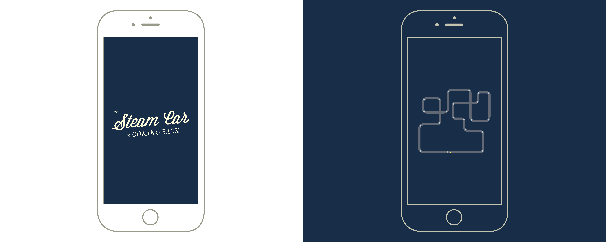
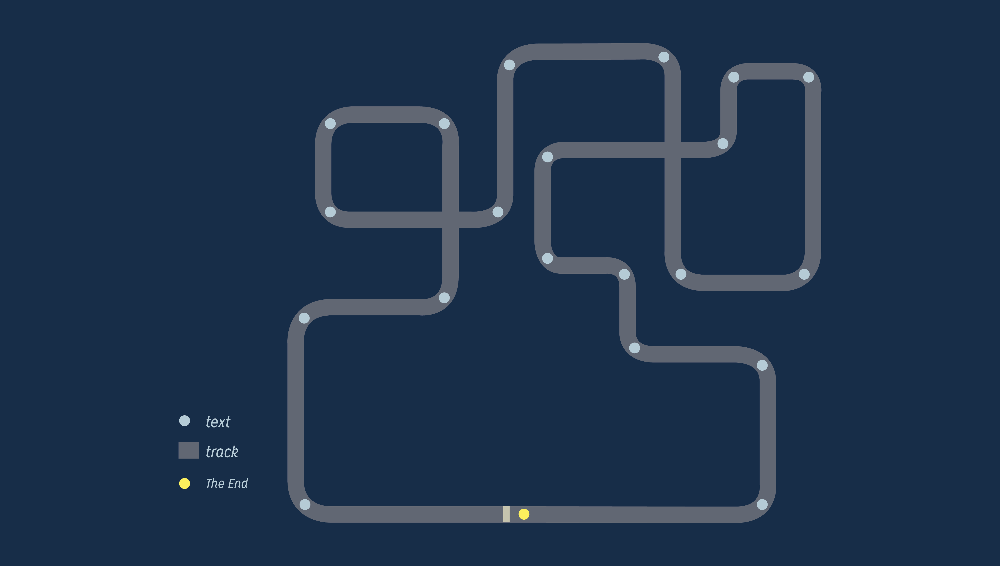
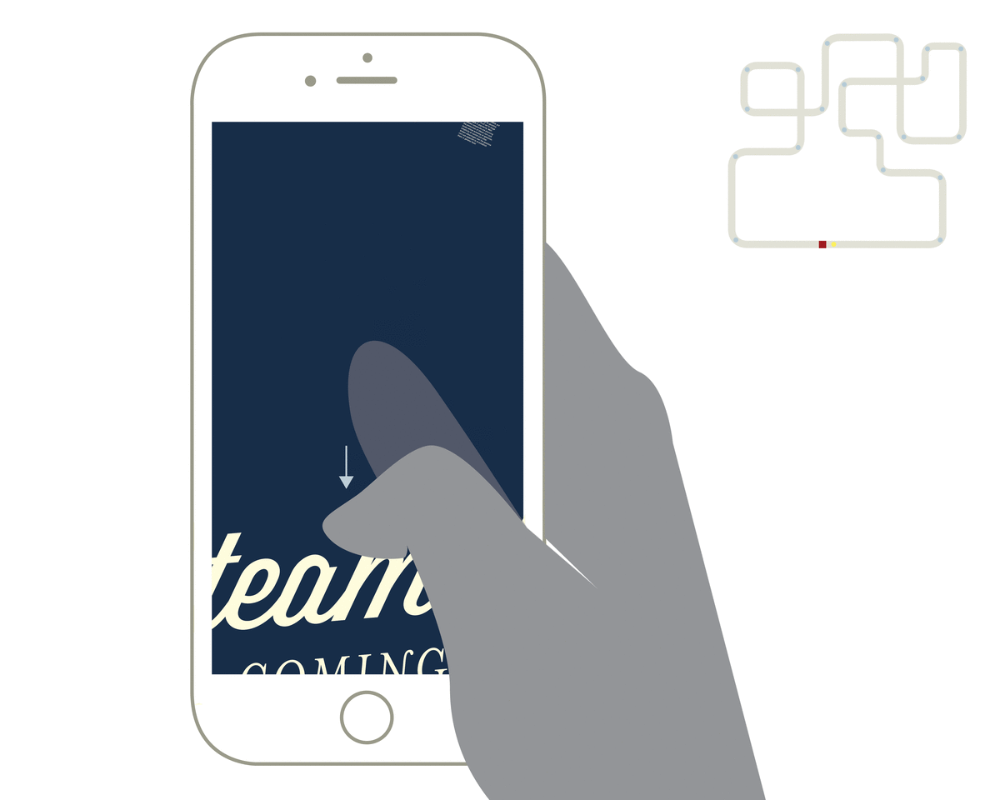
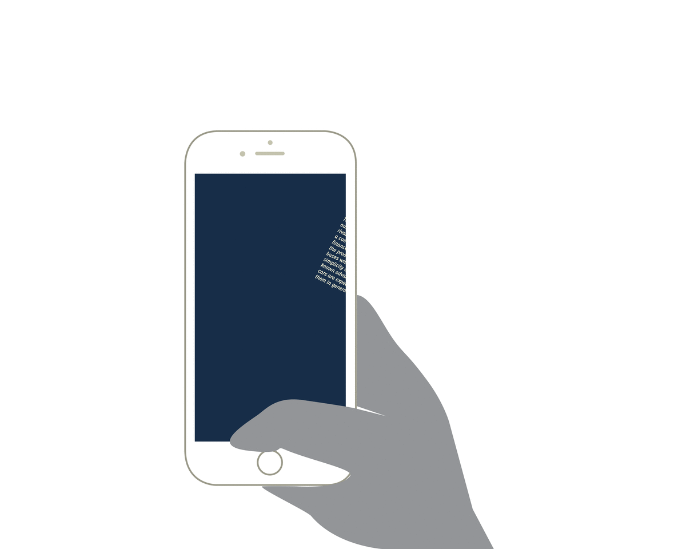
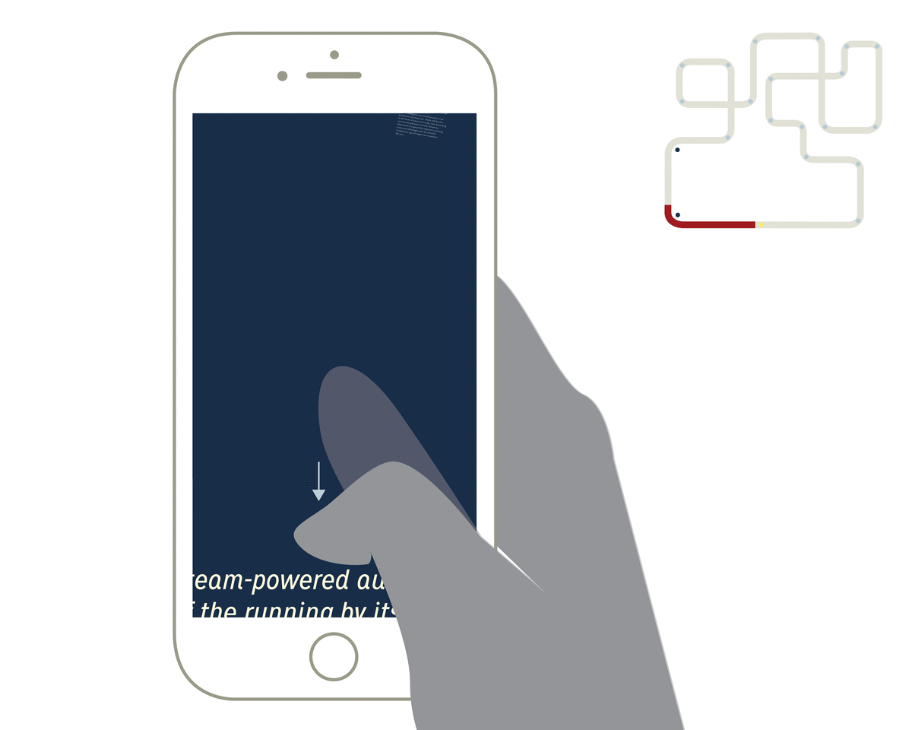

Imagine
reading while driving
driving = reading
to turn the page is to steer the wheel
Here, are two reading experiences for the article, "The Steam Car is Coming Back!", both aim to simulate the experience of driving. The desktop emphasizes the motion of steering the wheel to move forward, while the mobile expresses the driver's perspective while driving.
1.
The Desktop
For my chosen article, I wanted to explore the idea of reading experience simulating driving. In the desktop experience, the traditional scroll bar is replaced with a steering wheel and the reader must steer right in order to read on.
2.
The Mobile
The mobile version will not have a steering wheel, but instead the driving experience is simulated through
the driver's point of view. As we drive along, things come in and out of view, on our side, and in order to fully view them we must turn. Similarily, the article is split
into sections scattered over the span of a track
like those in race car games.

The article title page is first shown,
then an overview of the reading (driving) track is displayed.

All text are located at turns.


Swipe down to read on, and sections of text will get closer.
Text are off to the side of driving path,
so start tilting phone for text to come into view.
Turn body in order for text to come into full view and on route.


Repeat same gestures to continue:
swipe down to read foward,
tilt phone and turn body for text to come into view.
This is a final project for the Rhode Island School of Design Spring 2016 course Editorial Design for Screen, taught by Professor Dylan Greif. The objective is to design and edit an article as a unique editorial experience for the screen.To not only design the article's reader experience but also the user experience, how a user would browse/access/and discover the content. This web presentation is the proposal and mockup of the experience I designed. The article used is "The Steam Car is Coming Back!" featured in the Sept 1932 issue of Modern Mechanix and Inventions. Thank you for viewing.